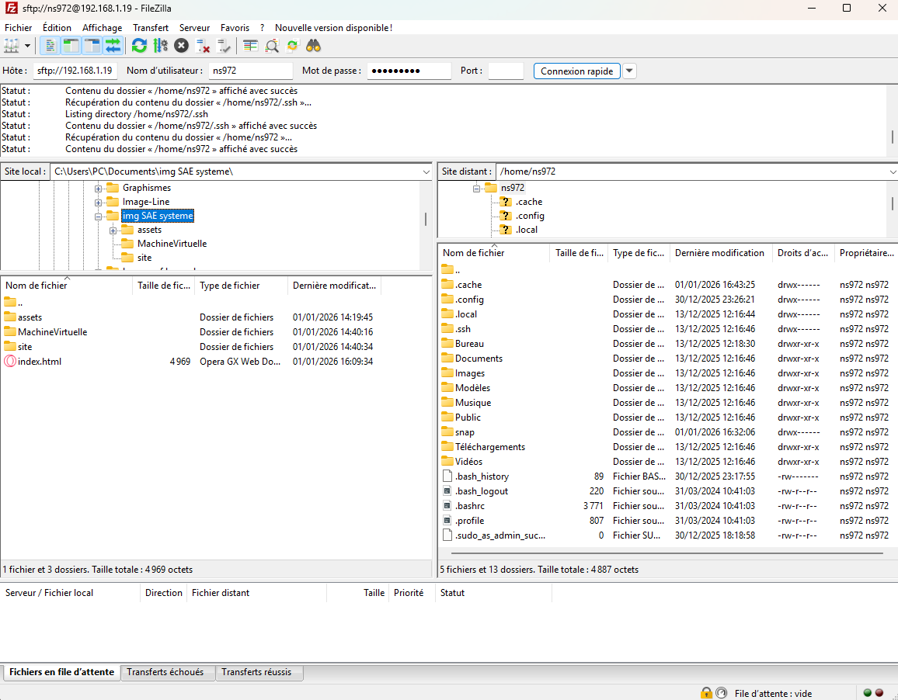

Cette étape a été réalisée avant la création des utilisateurs personnalisés, ce qui explique l'apparence par défaut de l'invite de commande dans les captures d'écran ci-dessous.
Une fois la machine virtuelle opérationnelle, nous avons procédé à l'installation du serveur web pour héberger notre site.
Avant toute chose, nous avons mis à jour la liste des paquets de notre système pour garantir l'installation d'une version récente et sécurisée. Nous avons ensuite installé le service Apache2 via le terminal :
Nous avons confirmé l'installation pour autoriser l'utilisation de l'espace disque nécessaire.
Pour que le serveur soit accessible, nous avons dû configurer le pare-feu d'Ubuntu afin d'autoriser le trafic web entrant :
Pour nous assurer que le serveur fonctionnait correctement, nous avons ouvert le navigateur Web à l'intérieur de la VM et testé l'adresse http://localhost.
La page par défaut d'Apache s'est affichée avec succès, confirmant que le service est actif.
Enfin, nous avons localisé le répertoire où le serveur cherche les fichiers à afficher :
/var/www/html.index.html pour qu'il soit rendu public sur le serveur.Pour envoyer les fichiers de notre site (HTML, CSS, images) depuis nos ordinateurs personnels vers le serveur de la machine virtuelle, nous avons utilisé le protocole SFTP via le logiciel FileZilla.
Préparation : Nous avons d'abord installé le service SSH sur la VM pour autoriser la connexion à distance.
Transfert : Une fois connectés avec l'adresse IP de la VM, nous avons fait glisser nos dossiers vers le répertoire de destination.
